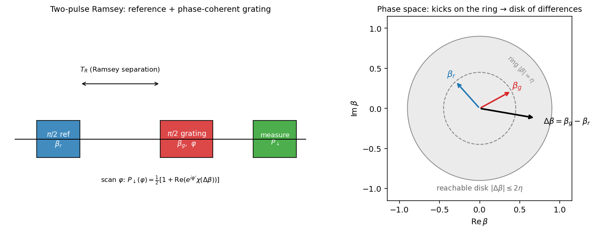

The lineage theses and papers are the human-readable source; on top sits a structured, schema-validated parameter layer that cites into them, so every number is traceable to where it was measured or derived. A digital-twin spike (physics engines + twin compositions) consumes that layer and is validated against held-out benchmarks.
Technical notes
Self-contained derivations and models, rendered with figures and equations in place.

Finite acoustic-transit effects on the stroboscopic R2 Rabi rate
How the finite speed of sound in the single-pass Raman AOM shapes the stroboscopic drive: why switching only R2 preserves the spin-rotation area, why the ion still sees an effectively longer pulse with a hard floor, the single- vs double-pass comparison, and the detuning-comb fingerprint.

The stroboscopic phase grating as a phase-space probe — transfer function
Self-contained derivation of the measurement transfer function of the Strobo2.0 active phase grating: which function of the motional state the spin-flip signal measures, and how a two-pulse Ramsey version reads the characteristic — and hence Wigner — function from qubit populations alone.